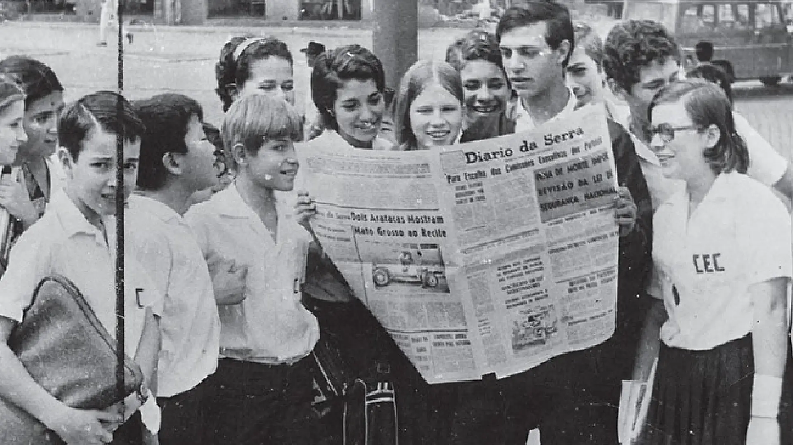

Núcleo Cultural do Acervo Diário da Serra
Preservação, digitalização e difusão da memória documental de Mato Grosso do Sul.
Sobre o Núcleo Cultural do Acervo Diário da Serra
O Núcleo Cultural do Acervo Diário da Serra é uma iniciativa da Fundação Barbosa Rodrigues dedicada à preservação, organização, digitalização e difusão de um importante patrimônio documental de Mato Grosso do Sul. Por meio deste projeto, exemplares históricos do Jornal Diário da Serra foram organizados e digitalizados, garantindo sua conservação e ampliando o acesso público à memória, à cultura e à história do Estado.
Nesta página, você poderá conhecer mais sobre o projeto, assistir à entrevista de apresentação e acessar o acervo digital completo, disponibilizado gratuitamente por meio de um repositório online.
Este projeto foi realizado com o apoio da Fundação de Cultura de Mato Grosso do Sul (FCMS) e do Governo do Estado de Mato Grosso do Sul, por meio de Termo de Fomento destinado à preservação e divulgação do patrimônio cultural sul-mato-grossense. A Fundação Barbosa Rodrigues agradece aos parceiros e apoiadores que tornaram possível a preservação e o compartilhamento deste importante acervo histórico com toda a sociedade.
Conheça a história do Acervo Diário da Serra
Vídeo de apresentação em produção. Em breve, disponível nesta seção.
Acervo Digital Completo
Acesse gratuitamente todos os exemplares digitalizados do Jornal Diário da Serra.
Acessar Acervo Digital